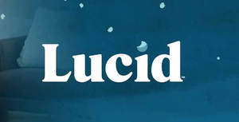

Trade Mark Journal No.2025/014 4 April 2025
UK00004177731 22 March 2025 (10,20)

- Class 10
- Support mattresses for medical use; Medical supports for the body; Cervical pillows for medical use; Cushions for medical use for supporting infants being examined; Ankle supports for medical use; Knee supports for medical use; Cushions for medical use, adapted to support the face; Shoulder supports for medical use; Orthopaedic supports; Air pillows for medical purposes; Mattresses for medical use; Padded neck supports [cushions] for surgical use; Wrist supports for medical use; Medical support hosiery; Orthopedic support bandages; Back supports for medical purposes; Support bandages for medical purposes; Support garments for medical use; Air pillows for babies [medical purposes]; Pillows for orthopedic use; Air pillows for infants [medical purposes]; Water pillows for medical purposes; Cushions for medical purposes; Medical support tights; Inflatable cushions for medical use; Padded cushions for medical purposes; Cushions for medical use for supporting infants while being bathed; Massage beds for medical purposes; Inflatable cushions for medical purposes; Orthopaedic supports for feet; Alternating pressure supports for medical use; Padded neck supports for surgical use; Inflatable mattresses for medical purposes; Orthopaedic compression supports; Medical bags designed to hold medical instruments; Medical blankets for the cooling of patients; Clothing, headgear and footwear, braces and supports, for medical purposes; Air cushions for medical purposes; Maternity support belts for medical purposes; Arch supports [orthopaedic]; Dental foundation supports; Blankets for medical purposes; Contoured cushions for patients' use on beds [adapted for medical purposes]; Medical blankets for the warming of patients; Sheets [drapes] for medical use; Ice bag pillows for medical purposes; Splinting (Supportive -) for medical use; Therapeutic support bandages; Air mattresses, for medical purposes; Air mattresses for medical purposes; Medical patient treatment chairs; Bed bases for beds especially made for medical purposes; Air mattresses for babies [for medical purposes]; Orthopaedic supports for heels; Electric blankets [bed] for medical use; Splints for medical use; Medical furniture and bedding, equipment for moving patients; Air beds for medical purposes; Cushions [pads] (heating -), for medical purposes; Heel supports for orthopaedic use; Air mattresses for infants [for medical purposes]; Alternating pressure mattresses for medical use; Support bandages; Cushioning devices for medical use; Medical aids for use in stoma care; Belts for attaching medical monitors to patients; Medical stretchers; Contoured cushions for patients' use on chairs [adapted for medical purposes]; Hydrostatic beds for medical purposes; Shaped padding for supporting parts of the body [medical use]; Medical trays; Slings for medical use; Arch supports for orthopaedic shoes; Support stockings for surgical use; Splints [for medical purposes]; Medical procedure chairs; Arch supports for orthopaedic boots; Heat beds for medical treatment; Armchairs for medical or dental purposes; Pillows for therapeutic use; Beds, specially made for medical purposes; Beds specially made for medical purposes; Bandages [supportive] for veterinary use; Examination chairs specially made for medical use; Orthopedic cushions; Special furniture for medical use; Medical prostheses; Abdominal pads for medical use; Pads (Abdominal -) for medical use; Pressure bandages for anatomical support purposes; Hybrid beds being soft sided waterbeds [for medical use]; Examination couches specially made for medical use; Prostheses for medical treatment; Water beds for medical purposes; Compression socks for medical or therapeutic use; Chairs especially made for medical use; Medical devices; Furniture adapted for medical treatment use; wedge pillows for medical purposes; support pillows in wedge shape or other shapes for medical purposes; Beds (Hospital -).
- Class 20
- Pillows; Neck pillows; Stuffed pillows; Inflatable pillows; U-shaped pillows; Bath pillows; Beds, bedding, mattresses, pillows and cushions; Scented pillows; Nursing pillows; Throw pillows; Bamboo pillows; Air pillows; Latex pillows; Maternity pillows; Bean bag pillows; Travel pillows; Memory foam pillows; Accent pillows; Nap mats [cushions or mattresses]; Head positioning pillows for babies; Bed mattresses; Head supporting pillows; Neck-supporting pillows; Support pillows for use in baby seating; Cushions; Mattress toppers; Bedding for cots [other than bed linen]; Baby head support cushions; Mattress pads; Straw mattress; Mattress (Straw -); Chair cushions; Futon mattresses [other than childbirth mattresses]; Foam mattresses; Inflatable neck support cushions; Air bed lounger; Bedding for nursery cots [other than bed linen]; Pet cushions; Cushions (Pet -); Inflatable pillows [other than for medical use] for fitting around the neck; Bean bag cushions; Sleeping bag pads; Japanese floor cushions (zabuton); Head support cushions for babies; Neck support cushions; Neck pillows [other than for medical or surgical use]; Sleeping mats for camping [mattresses]; Air cushions; Cushions (upholstery); Foam camping mattresses; Feather beds; Soft furnishings [cushions]; Bed chairs; Seat cushions; Bed slats; Sofa beds; Floating inflatable mattresses (airbeds); beds; bedsteads; headboards; bedding (other than bed linen), bedding for cots (other than bed linen); cots; pillows (not for surgical or curative purposes), cushions and bolsters (upholstery); settees convertible into beds; divans; couches; bedroom furniture; accessories for upholstery being non-metallic fittings for cushions and bolsters and other upholstery in Class 20; mirrors; blinds; memory foam pillows; latex pillows; pillows; nursing pillows; throw pillows; travel pillows; chair cushions; neck pillows; inflatable pillows; furniture; beds; cushions; pillows; bolsters; neck pillows; neck-supporting pillows; Adjustable beds; bed bases; bed headboards; beds; furniture; mattress toppers; mattresses; mattress pads; pillows filled with foam crumb; Mattresses; beds; bedsteads; headboards; cots; nappy stackers for use with cots; cot tidies and cot organizers; cushions and bolsters (upholstery) divans; couches; mirrors; blinds; furniture and nursery furniture; Moses basket stands; curtain poles; bean bags; parts and part fitting for all the aforesaid; Accent pillows; Acrylic counter displays; Action figures (Decorative -) of plaster; Action figures (Decorative -) of plastic; Action figures (Decorative -) of wax; Action figures (Decorative -) of wood; Adhesive wall decorations of wax; Adhesive wall decorations of wood; Adjustable beds; Adjustable seat carriers; Advertisement boards; Advertisement display boards of glass [non-luminous]; Advertisement display boards of plastic [non-luminous]; Advertisement display boards of wood [non-luminous]; Advertising balloons; Advertising display boards; Advertising display boards [furniture]; Advertising display boards of glass [non-luminous]; Advertising display boards of plastic [non-luminous]; Advertising display boards of porcelain [non-luminous]; Advertising display boards of wood [non-luminous]; Advertising signboards of plastics; Advertising signboards of wood; Air bed lounger; Air cushions; Air cushions in the nature of furniture [not for medical purposes]; Air cushions, not for medical purposes; Air hose reels [non-mechanical and not of metal]; Air mattresses; Air mattresses for use when camping; Air mattresses, not for medical purposes; Air pillows; Air pillows, not for medical purposes; Amber; Amber statues; Amber (Yellow -); Amberoid statues; Ambroid bars; Ambroid plates; Anchor bolts, not of metal; Anchor bolts, not of metal, for use in bridge construction; Anchoring devices of (Non-metallic -); Anchors (wall plugs not of metal); Angle valves of plastics, other than parts of machines; Animal bone [unworked or partly worked material]; Animal carriers in the form of boxes; Animal claws; Animal hooves; Animal horns; Animal housing and beds; Animal teeth; Animals (Stuffed -); Antique furniture; Antique reproduction furniture; Antique style furniture; Antlers; Antlers (Stag -); Arbours [furniture]; Architectural fasteners of non-metallic materials; Arm chairs; Arm rests for furniture; Armchairs; Armoires; Armrests; Art (Works of -) of wood, wax, plaster or plastic; Artificial honeycombs; Artificial horns; Assembled display stands; Assembled display units [furniture]; Assembled exhibition stands; Assemblies for display purposes; Audio racks [furniture] for use with audio equipment; Auditorium furniture; Austrian blinds; Babies' baskets; Babies' bouncing chairs; Babies' chairs; Baby bolsters; Baby changing mats; Baby changing platforms; Baby changing tables; Baby gates; Baby head support cushions; Baby walkers; Back panels [parts of furniture]; Back support cushions, not for medical purposes; Bag closures not of metal; Bag hangers, not of metal; Bakers' bread baskets; Ball catches [not of metal]; Ball ended eyebolts [not of metal]; Bamboo baskets for industrial purposes; Bamboo blinds; Bamboo canes; Bamboo curtains; Bamboo furniture; Bank furniture; Banking counters; Banqueting chairs; Barbers' chairs; Barrel hoops, not of metal; Barrels and casks; Barrels and casks, non-metallic; Barrels (Non-metallic -) for the identification of birds; Barrels (Non-metallic -) for the identification of pet animals; Barrels, not of metal; Bars (latch -) [not of metal]; Barstools; Bases for waterbeds [other than for medical use]; Basin cabinets; Basin plugs of non-metallic materials; Baskets; Baskets (Fishing -); Baskets for barrels; Baskets, non-metallic; Baskets, non-metallic, for the transportation of domestic animals; Baskets, not of metal; Basketware; Bassinets; Bassinettes; Bath grab bars, not made of metal; Bath pillows; Bath rails, not made of metal; Bath seats; Bathroom cabinets; Bathroom cupboards; Bathroom fittings in the nature of furniture; Bathroom furniture; Bathroom mirrors; Bathroom stools; Bathroom vanities; Bathroom vanities [furniture]; Bathroom vanity units incorporating basins; Bathtub grab bars, not of metal; Beach beds; Beach beds incorporating wind shields; Bead curtains; Bead curtains for decoration; Beam supported seating; Beams for display fittings; Bean bag beds; Bean bag chairs; Bean bag cushions; Bean bag pillows; Bean bags; Bed bases; Bed casters, not of metal; Bed chairs; Bed fittings, not of metal; Bed frames; Bed frames of metal; Bed heads; Bed mattresses; Bed rails; Bed slats; Bed springs of non-metallic materials; Bedding, except linen; Bedding for cots [other than bed linen]; Bedding for nursery cots [other than bed linen]; Bedroom furniture; Beds; Beds adapted for use by those with mobility difficulties; Beds, bedding, mattresses, pillows and cushions; Beds for animals; Beds for birds; Beds for household pets; Beds for pets; Beds (Hydrostatic [water] -), not for medical purposes; Beds incorporating divan bases; Beds incorporating inner sprung mattresses; Beds made of wood; Beds of wood; Bed-settees; Bedside cabinets; Bedside lockers; Bedsprings; Bedsteads; Bedsteads made of wood; Bedsteads of wood; Bedsteads [wood]; Beehives; Beehives (Comb foundations for -); Beehives (Sections of wood for -); Bench seating; Bench tables; Benches; Benches for sports fields; Benches [furniture]; Benches (Vice -) not of metal; Benches with shelves; Benches (Work -); Bentwood furniture; Bicycle locks, not of metal; Binding screws, not of metal, for cables; Bins adapted to facilitate accelerated breakdown of organic matter [non-metallic]; Bins designed to facilitate accelerated breakdown of organic matter [non-metallic]; Bins, not of metal; Bins of plastics for making compost; Bird houses; Birdhouses; Birds (Stuffed -); Blackout blinds [indoor]; Blackout blinds [slatted, indoor]; Blanking plugs; Blind bolt fasteners of non-metallic materials; Blind pulls of non-metallic materials; Blinds (Indoor window -) [shades] furniture; Blinds of reed, rattan or bamboo (sudare); Blinds (Slatted indoor -); Blinds (Slatted indoor -) for protection against light; Boarding stairs (Mobile -), not of metal, for passengers; Boarding stairs, not of metal, mobile, for passengers; Boards (Display -); Boards for the display of graphic materials; Boards for the display of modelling materials; Boards for the display of pictorial materials; Boards for the display of printing materials; Boards in the nature of furniture; Boards of plastics materials for advertising purposes [non-luminous]; Boards of wood for advertising purposes [non-luminous]; Bolsters; Bolts (Door -) not of metal; Bolts, not of metal; Bone carvings; Book holders; Book holders [furniture]; Book rests; Book rests [furniture]; Book shelves; Book stands; Book stands [furniture]; Book supports; Book supports [furniture]; Bookcases; Bookshelves; Booster seats; Boot trays [furniture]; Bottle caps, not of metal; Bottle casings of wood; Bottle closures, not of metal; Bottle closures not of metal; Bottle crates [other than of metal]; Bottle racks; Bottle rails; Bottle stoppers, not of glass, metal or rubber; Bottles (Corks for -); Bottling racks; Bouncing cradles; Box shelves; Box springs; Boxes for stacking purposes [plastic]; Boxes for stacking purposes [wood]; Boxes for storage purposes [plastic]; Boxes for storage purposes [wood]; Boxes made of laminated plastics; Boxes made of paper coated wood; Boxes made of plastic; Boxes made of plastics materials for packaging; Boxes made of wood; Boxes (Nesting -); Boxes of wood; Boxes of wood or plastic; Boxes (packaging -) in collapsible form [plastic]; Boxes (packaging -) in collapsible form [wood]; Boxes (packaging -) in flat form [plastic]; Boxes (packaging -) in flat form [wood]; Boxes (packaging -) in made-up form [plastic]; Boxes (packaging -) in made-up form [wood]; Bracelets (Identification -), not of metal, for hospital purposes; Brackets (Non-metallic -) for frames; Brackets (Non-metallic -) for furniture; Brackets, not of metal, for furniture; Brackets of (Non-metallic -) for hanging window draperies; Brackets of (Non-metallic -) used for fixing plaques; Brackets (Picture frame -); Bread baskets (Bakers' -); Brochure holders [furniture]; Brush mountings; Buddhist family altars (butsudan); Buffets [furniture]; Bulletin boards [other than electronic]; Bumper guards for cots, other than bed linen; Bumper guards for cribs, other than bed linen; Bumper guards for furniture; Bundle clips of non-metallic materials; Bungs (Non-metallic -) for barrels; Figures made of rattan; Figures made of wood; Figures moulded from plastics material; Figures of bone; Figures of ivory; Figurines made of gypsum cement; Figurines made of gypsum derivatives; Figurines made of plaster; Figurines made of plastics; Figurines made of wood; Figurines made of wood resin; Figurines of bone; Figurines of ivory; Figurines of wood; Figurines [statuettes] of wood, wax, plaster or plastic; Filing cabinets; Filing cabinets in the nature of furniture; Finger-plates, not of metal; Fire guards; Fire resistant cabinets; Fire resistant lockable containers; Fire resistant mattresses; Fire safe cabinets [furniture] (non-metallic -); Fire safe cabinets [furniture] of metal; Fire screens, domestic; Fire screens for domestic use; Floating inflatable seats; Floor hinges, not of metal; Floor units of cardboard for displaying merchandise; Flower baskets of wicker; Flower pot stands; Flower stands; Flower stands [furniture]; Flower-pot pedestals; Flower-stands; Flower-stands [furniture]; Foam camping mattresses; Foam mattresses; Fodder racks; Foldaway beds; Folding beds; Folding chairs; Folding display screens; Folding display screens for use in conference displays; Folding display screens for use in exhibition displays; Folding display screens for use in shop displays; Folding panels for display purposes; Folding shelves; Folding tables; Food racks; Foodstuffs (Decorations of plastic for -); Foot rests; Foot stools; Footlockers; Footrests; Foot-rests; Footstools; Foundations for beehives; Framed stands; Frameless picture holders; Frames; Frames (Embroidery -); Frames for bed canopies; Frames for display boards; Frames for mirrors; Frames for photographs; Frames for pictures; Frames for signboards; Frames (Non-metallic -) for containers; Frames (Picture -); Frames (Picture -) of metal; Frames (Picture -) of non-metallic materials; Free standing office partitions; Freestanding partitions [furniture]; Freestanding towel racks; French memory boards; Front plate knobs (Non-metallic -); Fronts of cupboards; Fuel cans (Non-metallic -); Funeral caskets of wicker; Funeral caskets of wood; Funerary caskets; Funerary urns; Funerary urns made of precious metals; Furniture; Furniture adapted for use by those with mobility difficulties; Furniture adapted for use outdoors; Furniture and furnishings; Furniture being convertible into beds; Furniture cabinets; Furniture casters, not of metal; Furniture chests; Furniture doors; Furniture doors made of glass; Furniture ferrules (Non-metallic -); Furniture fittings, not of metal; Furniture for babies; Furniture for campers; Furniture for camping; Furniture for caravans; Furniture for children; Furniture for conservatories; Furniture for display purposes; Furniture for displaying goods; Furniture for doors [non-metallic]; Furniture for exhibition purposes; Furniture for filing purposes; Furniture for house, office and garden; Furniture for indoor aquaria; Furniture for indoor terraria; Furniture for industrial use; Furniture for kitchens; Furniture for motor homes; Furniture for offices; Furniture for shops; Furniture for sitting; Furniture for storage; Furniture for the physically handicapped, those of reduced mobility and people with disabilities; Furniture for use in auditoria; Furniture for use in rest rooms; Furniture for vivariums; Furniture frames; Furniture handles, not of metal; Furniture handles of plastic; Furniture incorporating beds; Furniture (Inflatable -); Furniture joints (Non-metallic -); Furniture locks (Non-metallic -); Furniture made from steel tubing; Furniture made from substitutes for wood; Furniture made from wood; Furniture made of plastics; Furniture made of rattan; Furniture made of steel; Furniture made principally of glass; Furniture moldings; Furniture of metal; Furniture of plastic materials; Furniture of plastics material for bathrooms; Furniture (Office -); Furniture panels; Furniture partitions; Furniture partitions of wood; Furniture (Partitions of wood for -); Furniture parts; Furniture racks; Furniture (School -); Furniture screens; Furniture shelves; Furniture supports (Non-metallic -); Furniture units; Furniture units for kitchens; Futon mattresses [other than childbirth mattresses]; Futons; Garden furniture; Garden furniture made of aluminium; Garden furniture made of metal; Garden furniture manufactured from wood; Garment covers [storage]; Household pets (Nesting boxes for -); Household shinto altars [Kamidana]; Hutches for animals; Hybrid beds being soft sided waterbeds [other than for medical use]; Hydrostatic beds, not for medical purposes; Hydrostatic [water] beds, not for medical purposes; Inflatable chairs; Inflatable cushions, other than for medical purposes; Inflatable furniture; Inflatable headrests; Inflatable mattresses for use when camping; Inflatable mattresses, other than for medical purposes; Inflatable mooring buoys; Inflatable neck support cushions; Inflatable pet beds; Inflatable pillows; Inflatable pillows [other than for medical use] for fitting around the neck; ; Dog beds; Cat beds; Dog baskets; Bed chairs; Sofa beds; Bed rails; Beds for pets; Bedding for cots [other than bed linen]; Bed heads; Bedding for nursery cots [other than bed linen]; Pet cushions; Cushions (Pet -); Portable beds for pets; Infant beds; Bumper guards for cots, other than bed linen; Beds for household pets; Chair beds; Bunk beds; Bed bases; Animal housing and beds; Pet furniture; Divan beds; Beds for animals; Bath pillows; Pet crates; Sleeping mats for camping [mattresses]; Beds; Bean bag beds; Mattresses [other than child birth mattresses]; Futon mattresses [other than childbirth mattresses]; Bed mattresses; Baby bolsters; Electric baby cradles; Support pillows for use in baby seating; Mattresses; Mattress pads; Baby head support cushions; Furniture for babies; Beds, bedding, mattresses, pillows and cushions; Straw mattress; Mattress (Straw -); Support pillows for use in baby car safety seats; Mattress toppers; Portable infant beds; Head positioning pillows for babies; Cots for babies; Maternity pillows; Cushions [other than for medical use].
TAHIR NAVEED